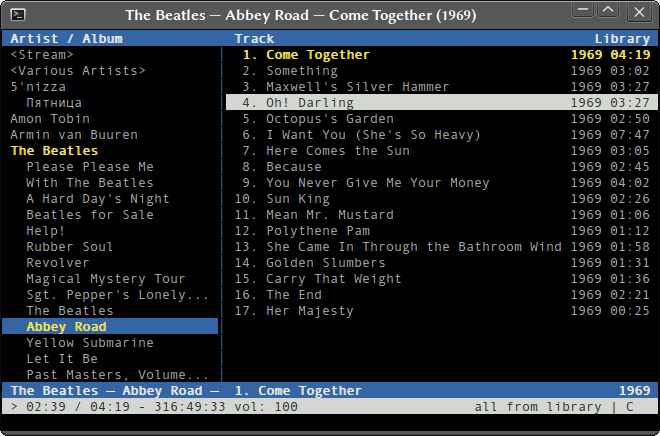

cmus is a small, fast and powerful text mode music player for Linux and *BSD.

Features
Input/Output Plugins
- Input: Ogg/Vorbis, MP3, FLAC, Musepack, WavPack, WMA, WAV, AAC, MP4, and everything supported by libmodplug
- Output: PulseAudio, ALSA, OSS, libao, aRts, Sun, and WaveOut (Windows)
Playing
- Gapless playback
- ReplayGain support
- MP3 and Ogg streaming (Shoutcast/Icecast)
- Powerful playlist filters
- Play queue
Interface
- Instant startup, even with thousands of tracks
- Easy to use directory browser
- Customizable colors
- Dynamic keybindings
You can bind a key to any command,:seek +1mfor example - Vi / less style search mode
- Vi style command mode with tab completion
Misc
- UTF-8 support
- Excellent compilations handling
- Can run external commands for the currently selected files (tag-editor for example)
- Can be controlled via UNIX socket using
cmus-remotecommand - Known to work on Linux, FreeBSD, NetBSD, OpenBSD and Cygwin
Documentation
cmus comes with a great reference manual. If you have it installed, try
man cmus-tutorial, man cmus and man cmus-remote.
Online Documentation
Download
Stable Releases
- cmus-v2.3.0-rc1.tar.bz2, released 22.02.2010
- cmus-v2.2.0.tar.bz2, released 27.07.2007
Bleeding Edge
git clone git://gitorious.org/cmus/cmus.git
Extras
- Audioscrobbler/Last.fm patch written by Frank Terbeck
- cmuscrobbler — Python scrobbler script
- post-fm — Perl one
Development
Git Repository
git clone git://gitorious.org/cmus/cmus.git
Mailing List
cmus-devel@lists.sourceforge.net
Dependencies
- ncurses (ncursesw recommended)
Optional Dependencies
- libpulse (PulseAudio)
- alsa-lib (ALSA)
- OSS (OSS)
- libao (libao)
- aRts (aRts)
- FLAC (.flac)
- libvorbis (.ogg)
- libmpcdec (.mpc, .mpp, .mp+)
- wavpack (.wv)
- libmad (.mp3)
- libavcodec (.wma)
- FAAD (.aac)
- mp4v2, FAAD (.mp4, m4a, m4b)
- libmodplug (.mod, .s3m, ... )
- libmikmod (.mod, .s3m, ...)